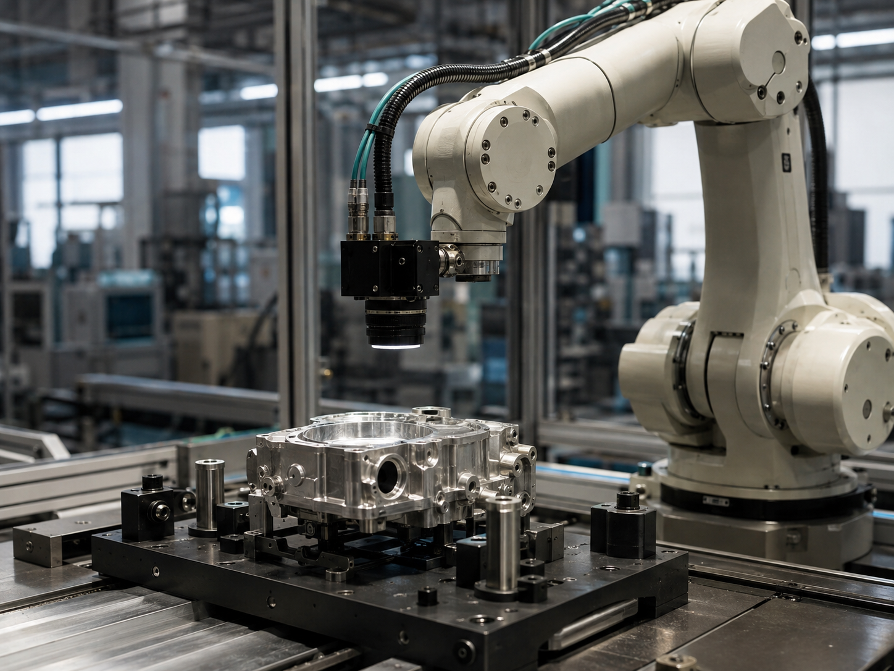

工业改善 / 场景界定
先把场景讲清楚，
再讨论技术投入
先对齐改善对象、作业边界
与验收口径。
对象
选定一个具体工位
从检查、搬运等作业环节切入。
边界
记录正常流程与异常
明确何时自动执行、何时交给人工。
口径
让改善前后可以比较
统一成本、节拍与质量的观察口径。
工业改善 / 价值拆解
返工与等待应成为改善试点的优先项
把可避免的损失与新增运行成本分开，看净改善空间。
单位成本指数 · 基准 = 100
示例数据，非客户结果
100
基准成本
−12
减少返工
−8
减少等待
+5
新增运行
85
改善后成本
示例测算100 − 12 − 8 + 5 = 85同一业务量与统计口径
工业改善 / 闭环机制
把识别、决策与执行连成可追溯的闭环
每次执行都留下结果，让异常可接管、判断可复核。
追溯线索：观测证据 → 判断依据 → 执行动作 → 结果记录